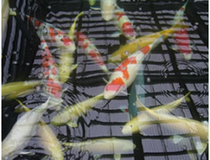
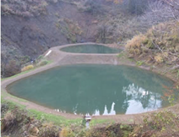

Disease and measures for Nishikigoi
⚠️On this page, it is described in a simple explanation, so we recommend that you check in detail in specialized books for details of diseases and treatments.
I. Early detection and diagnosis of fish diseases
It is said that the optimum water temperature for healthy carp is 24~25°C. On the other hand, the water temperature at which carp-related bacteria tend to increase is 25~40°C, and it is considered that various types of bacteria live between the water temperatures according to the season. Parasites and bacteria are always present in any pond water and can parasitize any fish. As long as the water quality environment is good, it coexists with carp without harming them. However, when carp are stressed due to environmental degradation and other factors, their anti-disease mosquitoes immediately decline, parasites and bacteria multiply, and they infect carp and develop the disease. In addition, there are cases where bacteria adhere to the scale and develop when it is descaled due to rough handling or when it is traumatized by hitting a protrusion.
II. Key points of observation
At the same time as observing the entire school of fish, we also take a good look at the individual fish from the following perspectives. If possible, it is important to carefully observe one carp every day to detect abnormalities at an early stage.
1.The turbidity and color luster of the pond water
The water that has become slightly green after the blue-green algae has come out can be said to be favorable water for the health of the carp.
However, if there is too much turbidity, it will interfere with viewing and observation.
On the other hand, water that is grayish, brownish, or overcast is a water quality that is not suitable for carp growth.
We suspect that the capacity of the sedimentation tank and filtration tank is insufficient, dirt, accumulation of sludge at the bottom of the pond, lack of fresh water, lack of dissolved oxygen, too many breeds, and excess feeding. Tests for pH, ammonia, nitrite, etc., to examine the water quality in detail.
2. How is the herd?
Koi fish that are separated from the flock, stay still in the corner of the pond or at the bottom of the pond, wander on the surface of the water, or cling helplessly to the water inlet or drain are in poor health.
Suspect a bacterial disease
3. Carp that swim in a strange way
There must be some kind of abnormality in a carp that rubs its body against the pond wall or the bottom of the pond, jumps frequently on the surface of the water, hits the pond wall, shakes the body of the fish, or swims out like crazy.
Suspect parasites.
4. Do you have an appetite?
Observe the entire flock and see if there are any carp that do not come to feed.
We also check for the presence of leftover food.
In addition to a decrease in water temperature, oxygen deficiency, increased concentration of ammonia and nitrite, parasites, pathogenic infections, and diseases of internal organs are suspected.
5. How is the feces doing?
Inspect whether the feces are floating, whether the color of the feces is abnormal, whether the feces are transparent, etc.
It is normal if the feces are a few millimeters long, sink quickly, and break into water.
Floating feces, continuous feces, gelatinous feces, etc. are not normal.
6. The appearance of the fish body is
In addition to abnormalities on the body surface such as engorgement of the fins and abdomen, color abnormalities, tumors, ulcers, and white clouds, it is also necessary to pay attention to symptoms such as thinness, puffiness, bending, exophthalmos, eye fall, fin tearing or melting, trauma, parasites, respiratory abnormalities, presence and extent of standing scales, adherents, protrusions, and puffiness of the gill covers.
When the gill lids are opened, you may find discoloration of the gills.
Observe carefully.
Precautions regarding Koi Herpes (KHV)
It has been confirmed that carp that have been treated for koi herpes virus disease by increasing temperatures can become carriers of the virus.
It is a complete misunderstanding that "Koi that have recovered naturally or have been treated with elevated temperature will recover completely and will not spread the disease to other koi."
Although KHV continues to live in the bodies of such carp, they appear healthy and do not show any symptoms of the disease, and therefore there is a possibility that they may become a source of infection spread through distribution and movement, such as through sales, temporary keeping, and exhibitions.
Koi that have recovered naturally or been treated with elevated temperature can become KHV carriers and become a source of infection for other koi.
Please be careful.
For more information on Koi Herpes,
"Information on Koi Herpes Virus Disease"
from the Ministry of Agriculture, Forestry and
Fisheries
You can view it at:
Please refer to that as well.
III. Unusual discovery
If you have any of the symptoms described below, we will determine the fish disease from the estimated fish disease names and consider whether it is an early symptom or a late symptom.
1. Observation of schooling patterns and swimming abnormalities
When there is something wrong with the physical condition of the carp, there is always some kind of unnatural movement in the way it flocks or swims
a. Flock to the water inlet
Perforated disease, white spot disease, gill myxobolosis, gyrodactylosis, dactyrogyrosis, chylodonellosis, Standing scale's disease, Ichthyoborosis, Columnaris disease, Edematosis, Apiosomasis
b. Collect in the drain.
Xlodonellosis, Dactyrogyrosis, Gyrodactylosis, Edematosis, Blanchiomycesis, White spot disease
c. Separated from the herd, clumped in a corner.
Gill disease, butterfly disease, white spot disease, new gill disease, columnaris disease
d. They don't come to eat.
Lycosis, Standing scales, Perforated disease, Ichthyobodosis, White spot disease, White cloud disease, Chilodonellosis, Dactyrogyrusis, Gyrodactylosis, Gill myxobolosis, Columnnaris disease, Enterochanerellosis, Apiosomiasis
e. Stationary at the bottom of the pond.
Lycosis, white spot disease, myxovorosis, gyrodactylosis, dactyrogyrosis, chylodonellosis, trichodinosis, ichthyoborosis
f. Lie down as if you slept at the bottom of the pond.
Sleeping sickness, cold
g. Sluggish movement and easy to stand still
Lycosis, gill myxobolosis, chylodonellosis, dactyrogyrosis, gyrodactylosis, columnaris disease, apiosomasis, edematosis, white cloud disease, cold, intestinal fullness, fatty degeneration
h. Floating on the surface of the water.
Lycosis, White spot disease, Myxobolosis, Gyrodactylosis, Dactyrogyrusiosis, Chilodonellosis, Trichodinosis, Ichthyoborosis, Columnaris disease, Edematosis, Apiosomesis, Blanchiomycesis
i. Rub the body of the fish against the object.
White spot disease, Epicalymposis, Epistylsis, Myxobolosis, Gyrodactylosis, Chylodonellosis, Ichthyoborosis, Columnaris disease
j. Shake the pectoral and dorsal fins
Cuttlebug disease
k. Have a hypersensitive way of swimming.
pH drop, butterfly disease, cuttlenose, white spot disease
l. Swimming crazy or losing balance.
White spot disease, bubble disease, fin disease, edema, columnaris disease, pH drop, electric leakage
m. Jumping abnormally over the surface of the water.
Cuttlebug disease In addition, it is normal for carp to open their pectoral fins when they are sleeping, and to close their pectoral fins when there is a disease somewhere.
2. Observation of abnormalities on the body surface
There are a variety of cases of abnormalities on the body surface, including cloudiness and hyperemia, parasites, Matsugasa symptoms, and perforation
a. A thin layer of white cloud-like material hangs over it.
White cloud disease, chylodonellosis, ichthyoborosis, early white spot disease, trichodinosis, gyrodactylosis
b. The mucus is removed and it is rough.
Chilodonellosis, gyrodactylosis
c. The surface of the body is cloudy.
Chilodonellosis, white spot disease, cold
d. The mucus is secreted abnormally and cloudy.
Bacterial leucosis, gyrodactylosis, columnaris disease
e. There are countless small white dots about the size of needle holes.
White spot disease
f. Hyperemia or bleeding.
White spot disease, chylodonellosis, ichthyoborosis, trichodinosis, gyrodactylosis, lycodactylosis, lycosis, standing scales, epistylisis, edematosis, white cloud disease
g. The scales are worm-eaten and have white stuff on them.
Epistyrisis (Tsuriganemu)
h. The fins are engorged, and the tips turn white and melt, making them broom-shaped
Columnaris disease
i. Descaling, the mucous membrane peels off, and becomes white and flaky.
Columnaris disease
j. There is water mold on the body of the fish.
Perforated disease, water mold disease
k. Mold around the back.
Columnaris disease
l. Strongly hyperemia in a small area
Columnaris disease
m. The scales are pine-shaped.
Standing scale disease, perforated disease, neoperforated disease, epistylsis, white cloud disease, cold sensitivity, intestinal fullness
n. There is a hole in the body of the fish.
Perforated disease, new perforated disease
o. Red and hyperemic red spots, ulcers.
Perforated disease, neoperforated disease, red spot disease
p. The body of the fry swells and looks transparent.
Edematosis, columnaris disease, blanchiomysesis
q. The flesh of one scale is sticking out
Wounds after parasites infested
r. The body surface of the fry is bleeding.
Edema
s. The belly is swollen.
Standing scales, enterochaneurosis, cold
t. With waxy tumors of white or pale pink color.
Papillomatosis
u. Only the red spots are discolored and raised.
Scarlet gluttony
v. It has a translucent rod-shaped parasite about 5~10mm long.
Cuttlebug disease
w. It has a transparent disc-shaped parasite of about 5 mm in its direct lineage.
Butterfly disease
x. The anus is bleeding and red.
Overfeeding, intestinal fullness
aa. Small air bubbles around the fins, head and eyes.
Bubble disease
ab. The skin is sore and the flesh is exposed.
cold
ac. The color is faded.
Intestinal fullness
3. Observation of abnormalities in body morphology
Abnormalities that appear on the body are easy to see with the naked eye, so early detection is easy.
a. My belly is abnormally bloated.
Intestinal fullness
b. Abnormally swollen breasts, sagging stomach, and narrow waist.
Chest bulge/pot belly
c. I've lost a lot of fat on my back and I look extremely thin.
Chilodonellosis, intestinal fullness
f. Their bodies are S-shaped, killer whale-shaped, and L-shaped.
Malformation
g. Your eyes are bulging.
Scale disease, intestinal fullness, lipoid degeneration
h. Your eyes are sunken.
Edema, sleeping sickness, columnaris disease
i. My eyes are rotting and burning.
Hole disease, Columnaris disease
j. The mouth, gills and fins are rotten and tattered.
Columnaris disease
k. The body shape is abnormal, and the fish has convulsions and swims in a wriggling motion.
Weakness in the waist
4. Observation of gill abnormalities
It is difficult to see what is inside the gills from the outside, but it is possible to infer that there is something wrong with the gills from the way the gill covers move. Additionally, abnormalities in the shape of the gill cover can be seen from the outside.
a. The area around the gills is whitish
Chilodonellosis, Dactylogyrosis
b. The gills are discolored white due to abnormal secretion of mucus.
Gyrodactyly, Dactylogyrosis, Ichthyobodosis, Chilodonellosis, Trichodiniasis, Gill myxobolosis
c. The base of the gill cover has turned white.
Columnaris disease
d. When the gill cover is opened, it appears white.
Columnaris disease, apiosomatosis
e. Partially grayish white, with the center gray or yellow and rotten, or missing.
Columnaris disease
f. There is a white agar-like substance on the tip of the gills.
New Gill Disease
h. There are white grains or white spots in the tissue.
Gill myxobolism
i. The gill covers remain open.
Gill myxobolism, gyrodactylosis
j. The gills are reddish-black.
Gill myxobolism
k. The gills are completely white
Herbicide Injury
5. Observations from the manner of death
When a fish dies, we check the gills, mucous membranes, and appearance. However, since the gills discolor within an hour of death, we examine fish just before they die.
a. Massive, sudden deaths.
Oxygen deficiency, poisons, columnaris disease, red spot disease
b. Several fish die each day.
Columnaris disease, white cloud disease, water mold disease, and other parasites and bacteria
c. Two or three fish die every day, though I didn't notice them the day before.
Columnaris disease, gill rot disease
d. Go crazy and die.
Columnaris disease
i. The carp that were near the water inlet died.
Columnaris disease, gill myxobolus disease
f. The carp that were near the drain died.
Dactylogyrosis, Gyrodactyosis
g. They die if their body surface turns even a little red.
Columnaris disease
h. The big and fat ones die first.
Oxygen deficiency
6. How to check for disease in individual fish
Symptoms of fish disease vary depending on whether it is in the early, middle or late stages. Early stages are easiest to cure, but in later stages the condition is already severe, and even if it does heal, most carp will have scars that make them unworthy of viewing.
a. Abnormalities on the body surface
There are many different abnormalities that can appear on the surface of the body, and people with microscopes can take a sample of mucus from the surface of the body and examine it. Start with a low magnification microscope and work your way up to higher magnifications.
b. Fin abnormalities
Check the papillae and pelvic fins for congestion, i.e., the presence of red streaks.
c. Gill abnormalities
Open the gills and observe. If there is no abnormality in the mucus on the body surface, two or three gills are removed and examined under a microscope. During the procedure, you will be given a light anesthetic. However, the gills of a dead fish will turn white within about an hour. Of course, even if we examine the fish after it has discolored, we cannot determine the cause of death.
d. Internal organ abnormalities
People who have dissected healthy fish and understand the normal condition of their internal organs will dissect them and check for any abnormalities in the internal organs. If you don't have much experience with dissections, try dissecting an unwanted healthy fish along with the reef fish and comparing the results.
IV. First aid
Depending on the fish disease, it may be necessary to thoroughly disinfect the affected pond, including immediately discarding or isolating the fish.
There are some diseases for which there is no established treatment because the cause is unknown. If only one or two fish are abnormal and the others are doing fine, pick out the sick fish and separate them, then diagnose the disease and treat it accordingly.
However, since many fish diseases are contagious, although the rate of spread may vary, it is preferable to treat the entire pond if possible.
1. First aid when the condition of the entire school of fish is abnormal
a. pond with a filter
a.1. Replace about two-thirds to three-quarters of the pond water.
a.2. The filter tank can be easily cleaned by simply pouring water over it.
a.3. Stop feeding and drinking water.
a.4. While stopping the supply of new water, add 25cc of formalin and 0.5g of Mazoten powder per ton of water and circulate. Be sure to aerate thoroughly.
a.5. After the formalin has completely disappeared, add 6 kg of salt and 50 g of terramycin (or 100 cc of Parazan D) per ton of water.
a.6. If there are no signs of recovery after 7 days, replace about two-thirds of the pond water again and add about 4 kg of salt per ton of water. Since the old water contains 2 kg of salt, the total amount is 6 kg per ton.
a.7. If
there are no signs of recovery after 7 days, consult a specialist.
b. A pond with standing water and no filtering system
b.1. Replace all the pond water.
b.2. Stop feeding.
b.3. If you can separate the koi for about three days, disinfect the pond with chlorine, fill it with fresh water, and then return the koi to the pond. If you cannot separate the koi for several days, clean the pond, fill it with water immediately, and let the water temperature adjust before returning the koi to the pond.
b.4. Following the example of a pond with a filtration system, perform a medicated bath treatment.
c. A pond that does not have a filter but has fresh water constantly flowing in
c.1. Replace all the pond water.
c.2. Stop feeding.
c.3. Following the example of a pond with a filtration system, we will carry out a medicated bath treatment.
2. First aid and inspection when the disease name is uncertain
If the name of the disease cannot be clearly identified, the following measures will be taken for the time being.
After taking the necessary steps, check the following: If any of the above points apply to you, you must take immediate action.
Medication will not be effective, and even if the disease appears to be cured temporarily, it will recur.
a. First aid
1. Stop feeding.
2. Add a little more new water.
3. Increase your oxygen intake.
b. Inspection items
1. Reflect on the basics of feeding, such as whether the food was old, whether there was too much, and whether the food was appropriate for the water temperature.
2. Reconsider whether the number of fish you are raising is too high, and check the water volume, oxygen supply, filtration efficiency, etc. of the pond.
3. Check to see if the filter and settling tanks are excessively dirty.
3. Additional measures when treatment is ineffective
If the disease is suspected and treated but there is no effect after a week, it is assumed to be a similar fish disease or complication and the treatment is started again with a different method.
a. First, replace about two-thirds of the old water.
b. If you need to maintain the effects of the salt bath, add more salt to replace the water you discarded.
c. If necessary, add a treatment that combines several different drugs. However, be sure to check that some drugs should not be mixed together.
How to care Nishikigoi
Nishikigoi may become ill if they become stressed.
If you chase the koi too hard with the net, they will get annoyed and run away, so be careful when using the net.
When lifting the Nishikigoi with a net, if they thrash around and injure their skin, it can become infected with pathogens, so be sure to handle them carefully when using a net.
It is not good for the Nishikigoi to be taken in and out of the pond too frequently, such as when cleaning the pond.
Not only will it damage their skin, but it will also cause stress to your fish due to the sudden changes in water temperature and quality.
Take measures such as installing equipment to easily drain waste from the pond so that you avoid having to remove the koi from the pond as much as possible.
It is said that Nishikigoi that experience oxygen deprivation will later become ill.
If the koi are crammed into a small space and become oxygen-deprived, it will become stressed.
Be careful not to deprive them of oxygen.
It is strictly forbidden to treat Nishikigoi roughly. Treat them with care, as if they were a baby
Creating water for a Nishikigoi pond
It is said that "it is better to create water than to create Nishikigoi."
Living water is more important to Nishikigoi than air is to humans.
In order to keep Nishikigoi healthy and help them live longer, rather than just keeping them alive, it is necessary to create water that is suitable for the Nishikigoi's lifestyle.
If you are aiming to enter a show or if you view Nishikigoi as a form of art, why not try researching special water preparation methods to bring out the hidden qualities within Nishikigoi?
The water in your koi pond is very important. so always pay close attention to it.
